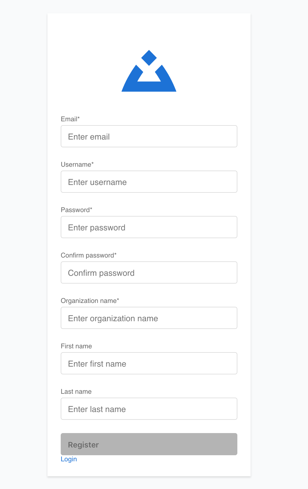

Registration
Creating your Buildly Product Labs account is quick and straightforward. The registration process ensures you get access to all the collaboration and project management features you need.
Registration Methods
- Self-Registration
If your organization allows open registration, you can create an account directly:
Visit your organization’s Buildly Product Labs URL
Click “Create Account” or “Register”
Fill in the required information
Verify your email address
Complete your profile setup
- Invitation-Based Registration
Most users join through team invitations:
Receive an invitation email from a team administrator
Click the invitation link
Complete the registration form (some details may be pre-filled)
Set your password and preferences
Access your team’s workspace immediately
Registration Form
The registration form includes:
Required Information: - Full name (first and last) - Email address (used for login) - Secure password - Organization name (if applicable)
Optional Details: - Job title or role - Department - Phone number - Profile picture
Account Verification
After submitting your registration:
Email Verification: Check your email for a verification message
Click Verification Link: This activates your account
First Login: Return to the platform and log in with your credentials
Profile Completion: Add any additional information requested
Platform Orientation: Take the optional tour to familiarize yourself with features
Troubleshooting Registration
Common Issues:
Email Not Received: Check spam/junk folders; wait a few minutes for delivery
Invitation Expired: Contact the person who sent the invitation for a new one
Organization Not Found: Verify the organization name or contact your administrator
Password Requirements: Ensure your password meets security requirements (usually 8+ characters with mixed case and numbers)
Getting Help: - Contact your system administrator - Use the “Forgot Password” link if you’ve already registered - Check with your team lead about invitation status
Next Steps
Once registered and verified:
Complete your profile setup
Join relevant teams and projects
Configure notification preferences
Explore the platform features
See Getting Started for detailed onboarding steps and Profile Settings for customizing your experience.